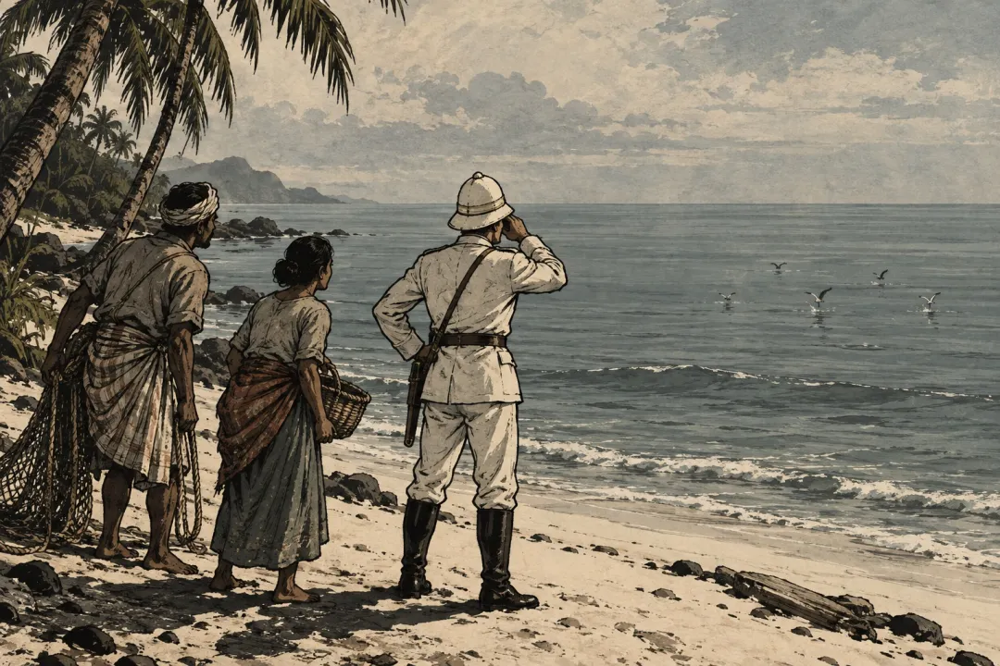

"달이 파랗게 뜨고 지구 온도가 내려감. 섬 하나가 터진 뒤 벌어진 일"
4,800km 떨어진 섬에서 대포 소리가 들림
1883년 8월 27일, 인도양의 작은 섬 로드리게스. 아프리카 동쪽 모리셔스 근처에 있는 섬임.
섬사람들이 멀리서 쿵, 쿵 하는 소리를 들음. 근처 바다에서 배가 대포를 쏘는 줄 알았음.
근처에 그런 배는 없었음.
소리는 4,800km 밖에서 온 거였음. 서울에서 인도 뉴델리까지 직선거리가 그쯤 됨.
같은 날 호주 퍼스에서도 같은 소리가 들림. 거기는 3,110km 밖이었음.
두 곳 사람들은 그게 뭔지 몰랐음. 그 시각 인도네시아에서 섬 하나가 터지고 있었다는 걸.

좋아요 135
댓글 15
리포스트 4
공유 0